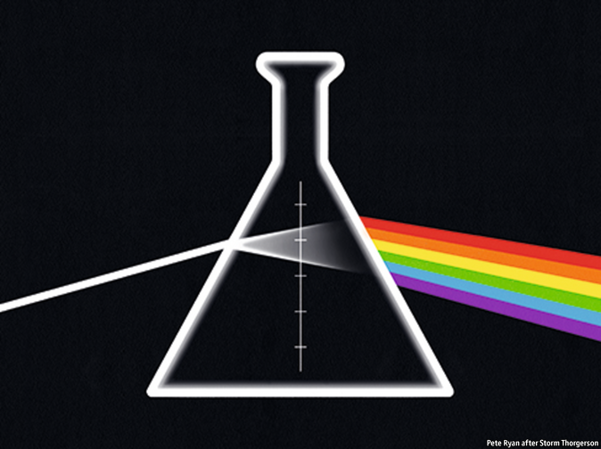
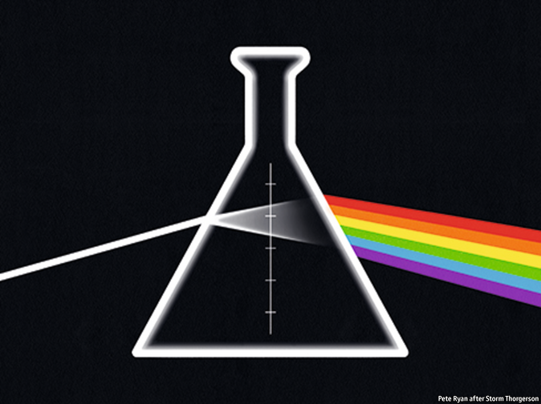

2021-04-04T13:36:19+00:00
Bright side of the moonshots
【首文】疯狂创意的光明面
【首文】瘋狂創意的光明面
Science after the pandemic
疫情后科学
疫情後科學
Covid-19 has brought together medical technologies that will transform human health
新冠疫情把各种将改变人类健康的医疗技术连结在一起
新冠疫情把各種將改變人類健康的醫療技術連結在一起
 
THE FIRST virus to have its genome read was an obscure little creature called MS2; the 3,569 RNA letters it contained were published in 1976, the hard-won product of some ten years’ work in a well-staffed Belgian laboratory. The SARS-CoV-2 genome, almost nine times longer, was published just weeks after doctors in Wuhan first became concerned about a new pneumonia. That feat has since been repeated with getting on for 1m different samples of SARS-CoV-2 in the hunt for fearsome variants like the one ravaging Brazil. Within weeks of its publication, the original genome sequence became the basis for the vaccines that today are stymieing the virus wherever supplies, politics and public confidence allow.
全球第一个被基因测序的病毒叫MS2，名气不大。1976年，经过约十年的艰辛研究，比利时一个人才济济的实验室发表了它包含的3569个RNA字母序列。新冠病毒的基因组长度几乎是MS2的九倍，在武汉的医生开始关注一种新的肺炎仅几周后便被发布。在此后在对一百万个不同的新冠病毒样本筛查可怕变种（像在巴西肆虐的那种）的过程中，这样的壮举不断上演。武汉的原始基因组序列在发布后几周内成为疫苗研发的基础，如今，在供应充足、政治支持、公众有信心的地方，新冠疫苗正在阻止病毒的传播。
全球第一個被基因測序的病毒叫MS2，名氣不大。1976年，經過約十年的艱辛研究，比利時一個人才濟濟的實驗室發表了它包含的3569個RNA字母序列。新冠病毒的基因組長度幾乎是MS2的九倍，在武漢的醫生開始關注一種新的肺炎僅幾周後便被發布。在此後在對一百萬個不同的新冠病毒樣本篩查可怕變種（像在巴西肆虐的那種）的過程中，這樣的壯舉不斷上演。武漢的原始基因組序列在發布後幾周內成為疫苗研發的基礎，如今，在供應充足、政治支持、公眾有信心的地方，新冠疫苗正在阻止病毒的傳播。
It is hardly remarkable that medical science has moved on since 1976. But the covid-19 pandemic has brought the sharp joy of seeing decades of cumulative scientific progress in sudden, concerted action. The spate of data, experiments and insights has had profound effects on the pandemic—and, indeed, on the future of medicine. It is also an inspiration. Around the world, scientists have put aside their own work in order to do their bit against a common foe. Jealously guarded lab space has been devoted to the grunt work of processing tests. Covid-19 has led to some 350,000 bits of research, many of them on preprint servers that make findings available almost instantaneously.
自1976年至今，医学取得的进展平平无奇。但新冠疫情让人们惊喜地看到，近几十年积累的科学进步突然协力迸发。大量数据、实验和见解对疫情——以及对医学的未来发展——产生了深远影响。这也是鼓舞人心的一幕。世界各地的科学家纷纷放下手头的工作，为抗击共同的敌人贡献一份力量。原本防范严密的实验室被用于处理繁重乏味的检测分析。新冠疫情已经引发了约35万个研究，其中许多通过预印本服务平台发表，让研究结果几乎可以在第一时间公之于众。
自1976年至今，醫學取得的進展平平無奇。但新冠疫情讓人們驚喜地看到，近幾十年積累的科學進步突然協力迸發。大量數據、實驗和見解對疫情——以及對醫學的未來發展——產生了深遠影響。這也是鼓舞人心的一幕。世界各地的科學家紛紛放下手頭的工作，為抗擊共同的敵人貢獻一份力量。原本防範嚴密的實驗室被用於處理繁重乏味的檢測分析。新冠疫情已經引發了約35萬個研究，其中許多通過預印本服務平台發表，讓研究結果幾乎可以在第一時間公之於眾。
The basis of all this is the application of genetics to medicine in a systematic and transformative way—not just in understanding the pathology of diseases but in tracking their spread and curing and preventing them. This approach could underpin what is becoming known as “natural security”—the task of making societies resilient in the face of risks stemming from their connection to the living world, whether because of disease, food insecurity, biological warfare or environmental degradation.
这一切的基础是把遗传学以系统且颠覆性的方式应用于医学，不仅用于探究病理，还用于追踪疾病的传播，以及治疗及预防疾病。这种方式或许可以支撑起所谓的“自然安全”任务，也就是让社会在面对它们与生物世界的连结所导致的风险时拥有复原力，无论这风险是疾病、粮食不足、生物战，还是环境恶化。
這一切的基礎是把遺傳學以系統且顛覆性的方式應用於醫學，不僅用於探究病理，還用於追蹤疾病的傳播，以及治療及預防疾病。這種方式或許可以支撐起所謂的“自然安全”任務，也就是讓社會在面對它們與生物世界的連結所導致的風險時擁有復原力，無論這風險是疾病、糧食不足、生物戰，還是環境惡化。
The application of genetics to medicine partly reflects huge, rapid gains in efficiency. Reading the DNA in a human genome cost $10m in 2007, today it takes less than $1,000 and a fraction of the time. Coupled with ever-better ways of synthesising and editing genes, this has enabled cleverness little short of the miraculous. Before the pandemic, these trailblazing techniques were not much talked about beyond the laboratory. Having shown their mettle against a brand new disease, they have burst out into the open.
遗传学在医学上的应用一定程度上反映了效率的迅速提升。2007年，读取人类基因组的DNA需要花费1000万美元，现在只需不到1000美元，耗时也大大缩短。再加上日益进步的基因合成和编辑方法，人类的聪明才智已能缔造近乎奇迹的成果。疫情前，这些前沿技术在实验室之外并没有多少人谈论。在一种全新的疾病上一展能耐后，它们突然在大众面前大放异彩。
遺傳學在醫學上的應用一定程度上反映了效率的迅速提升。2007年，讀取人類基因組的DNA需要花費1000萬美元，現在只需不到1000美元，耗時也大大縮短。再加上日益進步的基因合成和編輯方法，人類的聰明才智已能締造近乎奇蹟的成果。疫情前，這些前沿技術在實驗室之外並沒有多少人談論。在一種全新的疾病上一展能耐後，它們突然在大眾面前大放異彩。
Take the vaccination technology rapidly developed by Moderna of America and BioNTech of Germany, building on years of patient and often unsung work on RNA, a store of genetic information. It is remarkable that you can simply instruct the body’s cells to make the viral protein you have designed to prime the immune system. The RNA vaccines are testament to the insight of Eddie Cantor, a comedian, that it takes 20 years to become an overnight success.
以美国莫德纳（Moderna）和德国BioNTech研发的疫苗技术为例，它基于多年耐心且往往是默默无闻地研究RNA这种遗传信息储存物质之上。现在你可以简单地指示体内细胞制造出你设计用以激发免疫系统的病毒蛋白，令人惊叹。这种RNA疫苗印证了喜剧演员埃迪·康托尔（Eddie Cantor）的说法：一夜成名的背后是20年的苦功。
以美國莫德納（Moderna）和德國BioNTech研發的疫苗技術為例，它基於多年耐心且往往是默默無聞地研究RNA這種遺傳信息儲存物質之上。現在你可以簡單地指示體內細胞製造出你設計用以激發免疫系統的病毒蛋白，令人驚嘆。這種RNA疫苗印證了喜劇演員埃迪·康托爾（Eddie Cantor）的說法：一夜成名的背後是20年的苦功。
With this proof of concept, the investments of companies that have worked hard on RNA may now pay off. To some extent, RNA medicine divorces form from function. An RNA vaccine against any disease is a message written in genetic code: a vaccine against malaria, or some form of cancer, can be made in the same way and with the same equipment as a SARS-CoV-2 vaccine. If this provides a platform for getting cells to do all sorts of specific things and to desist from others, as it promises to, medicine will become both more powerful and more personal. Therapies tailored to rare, even one-off, genetic abnormalities should become routine.
在这一概念得到验证后，那些努力钻研RNA的公司之前的投资或许开始有回报了。在某种程度上，RNA医学实现了形式与功能的分离。针对任何一种疾病的RNA疫苗都是以遗传密码写成的一段信息：疟疾疫苗或某种癌症的疫苗可以使用与新冠疫苗相同的方式和设备制造。假如这项技术真的向它承诺的那样，提供了一个平台来让细胞执行各种特定任务，同时停止某些其他进程，那么医学将变得更强大也更个性化。针对罕见甚至极个别基因异常病例提供定制治疗方案应该会成为常规操作。
在這一概念得到驗證後，那些努力鑽研RNA的公司之前的投資或許開始有回報了。在某種程度上，RNA醫學實現了形式與功能的分離。針對任何一種疾病的RNA疫苗都是以遺傳密碼寫成的一段信息：瘧疾疫苗或某種癌症的疫苗可以使用與新冠疫苗相同的方式和設備製造。假如這項技術真的向它承諾的那樣，提供了一個平台來讓細胞執行各種特定任務，同時停止某些其他進程，那麼醫學將變得更強大也更個性化。針對罕見甚至極個別基因異常病例提供定製治療方案應該會成為常規操作。
The pandemic has also demonstrated the value of gene-sequencing technologies. Observing SARS-CoV-2 as it mutates is essential if the world is to understand and defend itself against dangerous variants. Should covid-19 become endemic, as is likely, sequencing will become the basis for developing regular booster shots. More broadly, routine sequencing is one of the best ways of knowing what is out there. Companies have done brilliantly in producing powerful sequencing systems for trained technicians. Now the world needs cheap, ubiquitous and reliable systems that can be used in the prison sick bay or the rural health centre, on the farm or at the town sewage works, to act as early-warning systems for the spread of pathogens.
这场疫情也显现出基因测序技术的价值。世界要了解并抵御新冠病毒的危险变种，就必须细察其变异过程。假如新冠肺炎成为持续存在的地方性流行病——这很有可能，那么测序将成为开发常规疫苗加强针的基础。更广泛地来说，常规测序是了解病毒演变的最佳途径之一。已有不少公司成功推出强大的测序系统，供训练有素的技术人员使用。而现在，世界需要开发廉价、普及且可靠的系统，作为病原体传播的预警系统，应用于监狱医务室、农村卫生所、农场或城镇污水处理厂。
這場疫情也顯現出基因測序技術的價值。世界要了解並抵禦新冠病毒的危險變種，就必須細察其變異過程。假如新冠肺炎成為持續存在的地方性流行病——這很有可能，那麼測序將成為開發常規疫苗加強針的基礎。更廣泛地來說，常規測序是了解病毒演變的最佳途徑之一。已有不少公司成功推出強大的測序系統，供訓練有素的技術人員使用。而現在，世界需要開發廉價、普及且可靠的系統，作為病原體傳播的預警系統，應用於監獄醫務室、農村衛生所、農場或城鎮污水處理廠。
Another area of work is where the pandemic has revealed a gap. Even today’s progress has yet to produce small-molecule antivirals to combat SARS-CoV-2. A focus for natural security should be drugs aimed at the viral families most likely to cause trouble in the future. This is not something that the market will support on its own. New mechanisms that involve governments will be needed, such as funds for R&D and trials and to buy stockpiles of medicine. Similar approaches should also be used for the looming threat of antibiotic-resistant bacteria.
另一个需要付诸努力的领域是在新冠疫情中暴露的缺口。尽管医学在抗疫上取得了重大进展，但能对抗新冠病毒的小分子抗病毒药物尚未问世。“自然安全”的一个焦点应该是针对最可能在未来制造问题的病毒家族研发药物。这不是单凭市场能够支撑的，需要有政府参与其中的新机制，例如为研发、试验、购买储备药品提供资金。面对抗生素耐药性细菌的潜在威胁，也应该采用类似手段。
另一個需要付諸努力的領域是在新冠疫情中暴露的缺口。儘管醫學在抗疫上取得了重大進展，但能對抗新冠病毒的小分子抗病毒藥物尚未問世。“自然安全”的一個焦點應該是針對最可能在未來製造問題的病毒家族研發藥物。這不是單憑市場能夠支撐的，需要有政府參與其中的新機制，例如為研發、試驗、購買儲備藥品提供資金。面對抗生素耐藥性細菌的潛在威脅，也應該採用類似手段。
These innovations will have big consequences. General-purpose RNA medicine asks new things of firms and regulators—as do other platforms, including some forms of gene therapy. Regulators will need to take advantage of the fact that, say, a malaria vaccine and a SARS-CoV-2 vaccine are both made on the same platform by streamlining approval for them, while continuing to ensure safety.
这些创新将产生巨大的效应。通用型RNA医学对企业和监管机构提出了新要求；其他平台也一样，包括某些类型的基因疗法。在继续确保安全的同时，监管机构将需要简化审批程序，充分利用诸如在同一平台上制造疟疾疫苗和新冠疫苗的新进展。
這些創新將產生巨大的效應。通用型RNA醫學對企業和監管機構提出了新要求；其他平台也一樣，包括某些類型的基因療法。在繼續確保安全的同時，監管機構將需要簡化審批程序，充分利用諸如在同一平台上製造瘧疾疫苗和新冠疫苗的新進展。
Drugs firms will have to adapt, as some chronic conditions may, in effect, be cured. Many are used to concentrating on the long-lasting afflictions that most trouble the rich world: heart disease, cancer, metabolic disorders, neurodegenerative conditions and the like. If drug development is more targeted on instructing cells what to do, rather than finding novel molecules against specific proteins, some of the know-how on which old-style pharma is based will be less relevant. Firms will need new pricing models and a new focus to their research.
一些慢性病可能会被基本治愈，制药公司将不得不做出调整。许多制药公司一直都专注于那些最困扰富裕世界的慢性病：心脏病、癌症、代谢紊乱、神经退行性疾病等。如果药物开发更多转向指示细胞行动，而不是寻找对抗特定蛋白质的新型分子，那么传统制药所依赖的一些专有技术将变得不那么重要了。药厂将需要摸索新的定价模式和研究重点。
一些慢性病可能會被基本治癒，製藥公司將不得不做出調整。許多製藥公司一直都專註於那些最困擾富裕世界的慢性病：心臟病、癌症、代謝紊亂、神經退行性疾病等。如果藥物開發更多轉向指示細胞行動，而不是尋找對抗特定蛋白質的新型分子，那麼傳統製藥所依賴的一些專有技術將變得不那麼重要了。藥廠將需要摸索新的定價模式和研究重點。
Natural protection
自然保护
自然保護
Technology will not, in itself, thwart pandemics. That goal also requires systems and institutions which use technology broadly and wisely. Without good systems, great technology will often provide only mediocre results, as it has in many covid-19 test-and-trace programmes. But the pandemic has shown that biomedical science has the tools and the enthusiasm to improve the world. The world must now build on both. ■
技术本身不会遏制大流行病。要实现这一目标，还需要系统和体制来广泛而明智地运用技术。如果没有好的系统，伟大的技术往往只能带来平庸的结果，正如不少新冠测试和追踪系统所表现的那样。但这场疫情表明，生物医学拥有改善世界的工具和热情。现在，世界必须依赖这两者。
技術本身不會遏制大流行病。要實現這一目標，還需要系統和體制來廣泛而明智地運用技術。如果沒有好的系統，偉大的技術往往只能帶來平庸的結果，正如不少新冠測試和追蹤系統所表現的那樣。但這場疫情表明，生物醫學擁有改善世界的工具和熱情。現在，世界必須依賴這兩者。